UniProt & PDB Features
| Category | Type | Description | CV id | Colour | Shape | Comments |
|---|---|---|---|---|---|---|
| Molecule Processing | Chain | The polypeptide sequence that remains when the cleaved peptide regions have been cleaved from the immature peptide. | SO:0000419 | #CC9933, RGB: 204, 153, 51 | Rectangle | |
| Transit | The transit_peptide is a short region at the N-terminus of the peptide that directs the protein to an organelle (chloroplast, mitochondrion, microbody or cyanelle). | SO:0000725 | #009966, RGB: 0, 153, 102 | Rectangle | ||
| Initiator methionine | The initiator methionine that has been cleaved from a mature polypeptide sequence. | SO:0000691 | #996633, RGB: 153, 102, 51 | Arrow-triangle pointing down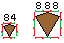 | It is always a feature removed at position 1; however, the amino acid M is shown in the sequence | |
| Propeptide | Part of a peptide chain which is cleaved off during the formation of the mature protein. | SO:0001062 | #99CCCC, RGB: 153, 204, 204 | Rectangle | ||
| Peptide | Active peptides are proteins which are biologically active, released from a precursor molecule. | SO:0001064 | #006699, RGB: 0, 102, 153 | Rectangle | ||
| Signal peptide | The signal_peptide is a short region of the peptide located at the N-terminus that directs the protein to be secreted or part of membrane components. | SO:0000418 | #CC0033, RGB: 204, 0, 51 | Rectangle | ||
| Isoform | Sequence variation | Description of sequence variants produced by alternative splicing, alternative promoter usage, alternative initiation and ribosomal frameshifting. | SO:0001149 | #33CC99, RGB: 51, 204, 153 | Rectangle | Note: Isoforms are not included in the FTViewer |
| Structural features | Turn | A reversal in the direction of the backbone of a protein that is stabilized by hydrogen bond between backbone NH and CO groups, involving no more than 4 amino acid residues. | SO:0001128 | #0571AF, RGB: 204, 204, 204 | Ribbon or rectangle | |
| Beta strand | A beta strand describes a single length of polypeptide chain that forms part of a beta sheet. A single continuous stretch of amino acids adopting an extended conformation of hydrogen bonds between the N-O and the C=O of another part of the peptide. This forms a secondary protein structure in which two or more extended polypeptide regions are hydrogen-bonded to one another in a planar array. | SO:0001111 | #FFCC00, RGB: 255, 204, 0 | Arrow or rectangle | Jmol cartoon colors | |
| Alpha helix | The helix has 3.6 residues per turn which corersponds to a translation of 1.5 angstroms (= 0.15 nm) along the helical axis. Every backbone N-H group donates a hydrogen bond to the backbone C=O group of the amino acid four residues earlier. | SO:0001117 | #FF0066, RGB: 255, 0, 102 | Spiral or rectangle | Jmol cartoon colors | |
| Cross link | Post-translationally formed amino acid bonds. | MOD:00033 | #FF6600, RGB: 255, 102, 0 | Either bridge over the sequence or rectangle for one position with antenna | ||
| Disulfide bond | The covalent bond between sulfur atoms that binds two peptide chains or different parts of one peptide chain and is a structural determinant in many protein molecules. | MOD:00689 | #23B14D, RGB: 51, 153, 102 | Either bridge over the sequence or rectangle for one position with antenna | ||
| Domains and sites | Region (maybe nucleotide region) | A sequence_feature with an extent greater than zero. A nucleotide region is composed of bases and a polypeptide region is composed of amino acids. | SO:0000001 | #B33E00, RGB: 0, 102, 153 | Rectangle | |
| Coiled coil | A coiled coil is a structural motif in proteins, in which alpha-helices are coiled together like the strands of a rope. | SO:0001080 | #006699, RGB: 0, 102, 153 | Rectangle | ||
| Motif | A conserved motif is a short (up to 20 amino acids) region of biological interest that is conserved in different proteins. They may or may not have functional or structural significance within the proteins in which they are found. | SO:0100017 | #402060, RGB: 64, 32, 96 | Rectangle | ||
| Repeat | A polypeptide_repeat is a single copy of an internal sequence repetition. | SO:0001068 | #9900FF, RGB: 153, 0, 255 | Rectangle | ||
| Calcium binding | A structurally or functionally defined protein region. In proteins with multiple domains, the combination of the domains determines the function of the protein. A region which has been shown to recur throughout evolution. | SO:0000417 | #FF3399, RGB: 255, 51, 153 | Rectangle | ||
| DNA binding | A structurally or functionally defined protein region. In proteins with multiple domains, the combination of the domains determines the function of the protein. A region which has been shown to recur throughout evolution. | SO:0000417 | #009933, RGB: 0, 153, 51 | Rectangle | ||
| Domain | A structurally or functionally defined protein region. In proteins with multiple domains, the combination of the domains determines the function of the protein. A region which has been shown to recur throughout evolution. | SO:0000417 | #9999FF, RGB: 153, 153, 255 | Rectangle | ||
| Zinc finger | A structurally or functionally defined protein region. In proteins with multiple domains, the combination of the domains determines the function of the protein. A region which has been shown to recur throughout evolution. | SO:0000417 | #990066, RGB: 153, 0, 102 | Rectangle | CPK colouring for zinc | |
| Nuclear Phosphorylation | A structurally or functionally defined protein region. In proteins with multiple domains, the combination of the domains determines the function of the protein. A region which has been shown to recur throughout evolution. | SO:0000417 | #FF9900, RGB: 255, 153, 0 | Rectangle | CPK colouring for phosphorus | |
| Metal binding | A binding site that, in the polypeptide molecule, interacts selectively and non-covalently with metal ions. | SO:0001092 | #009900, RGB: 0, 153, 0 | Diamond 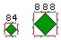 | ||
| Site | Biological sequence region that can be assigned to a specific subsequence of a polypeptide. | SO:0000839 | #660033, RGB: 102, 0, 51 | Chevron arrow 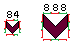 | Usually one amino acid but it also can be two flanking amino acids | |
| Binding site | (i) Binding site for any chemical group (co-enzyme, prosthetic group, etc.). (ii) A polypeptide binding motif is a short (up to 20 amino acids) polypeptide region of biological interest that contains one or more amino acids experimentally shown to bind to a ligand. |
(i) SO:0001091, (ii) SO:0100018 | #006699, RGB: 0, 102, 153 | Cat face 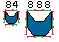 | ||
| Active site | Amino acid involved in the activity of an enzyme. | SO:0001104 | #FF6666, RGB: 255, 102, 102 | Circle 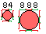 | ||
| Post translational modifications | Modified residue | A region where a transformation occurs in a protein after it has been synthesized. This which may regulate, stabilize, crosslink or introduce new chemical functionalities in the protein. | SO:0001089 | #000066, RGB: 0, 0, 102 | Triangle 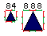 | |
| Lipid | A protein modification that effectively results from forming an adduct with a compound containing a lipid-like group either through acylation, alkylation, or amidation. | MOD:01155 | #99CC33, RGB: 153, 204, 51 | Wave 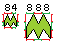 | ||
| Glycosylation | A protein modification that effectively replaces a hydrogen atom with a carbohydrate-like group through a glycosidic bond. | MOD:00693 |
Without distinguishing the type of linkage: #CC3366, RGB: 204, 51, 102 C-linked: #D3D3D3 N-linked: #87CEE6 O-linked: #FF0000 |
Elongated hexagon 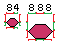 | Linkage colours | |
| Variations | Variant | Describes the natural sequence variants due to polymorphisms, disease-associated mutations, RNA editing and variations between strains, isolates or cultivars. | SO:0001147 | Heatmap. If only one colour is used then #006666 TGB:0, 102, 102 | Rectangle | |
| Sequence information | Compositional bias | Polypeptide region that is rich in a particular amino acid or homopolymeric and greater than three residues in length. | SO:0001066 | #FF3366, RGB: 255, 51, 102 | Rectangle | |
| Mutagen | Site which has been experimentally altered. | SO:0001148 | #FF9900, RGB: 255, 153, 0 | Rectangle | ||
| Conflict | Different sources report differing sequences. | SO:0001085 | #6633CC, RGB: 102, 51, 204 | Rectangle | ||
| Non consecutive | Indicates that two consecutive residues in a fragment sequence are not consecutive in the full-length protein and that there are a number of unsequenced residues between them. | SO:0001083 | #FF0033, RGB: 255, 0, 51 | // representing a break in the sequence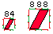 | ||
| Non terminal residue | The residue at an extremity of the sequence is not the terminal residue. | SO:0001084 | #339933, RGB: 51, 153, 51 | // either at the beginning or end of the sequence representing uncertainty about the limits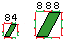 | ||
| Unsure, seq. uncertainty | Describes the positions in a sequence where the authors are unsure about the sequence assignment. | SO:0001086 | #33FF00, RGB: 51, 255, 0 | Rectangle | ||
| Non standard amino acid | A protein modification that inserts or replaces a residue with a natural, non-standard encoded residue, such as N-formyl-L-methionine, L-selenocysteine, or L-pyrrolysine. | MOD:00868, MOD:01187 (L-pyrrolysine), MOD:00031 (L-selenocysteine), MOD:00030 (N-formyl-L-methionine) | #330066, RGB: 51, 0, 102 | Pentagon pointing down 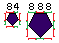 | ||
| Topology | Topological domain, extramembrane | Polypeptide region that is localized outside of a lipid bilayer. | SO:0001072 | #CC0000, RGB: 204, 0, 0 | Rectangle | |
| Intramembrane | Polypeptide region present in the lipid bilayer. | SO:0001075 | #0000CC, RGB: 0, 0, 204 | Rectangle | ||
| Transmembrane | Polypeptide region traversing the lipid bilayer. | SO:0001077 | #CC00CC, RGB: 204, 0, 204 | Rectangle |
InterPro
Category: InterPro DomainsType: About 7181 InterPro domains are available, a comprenhensive list is available at https://code.google.com/p/interproscan/source/browse/trunk/core/web/src/main/resources/entry_colours.properties
Description: Domains are distinct functional, structural or sequence units that may exist in a variety of biological contexts. Taken from http://www.ebi.ac.uk/interpro/user_manual.html#faqs_04
CV id:
| BS:00333 | Annotations which indicate the family to which the protein belongs |
| SO:0100017 | A conserved motif is a short (up to 20 amino acids) region of biological interest that is conserved in different proteins. They may or may not have functional or structural significance within the proteins in which they are found |
| SO:0100018 | A polypeptide binding motif is a short (up to 20 amino acids) polypeptide region of biological interest that contains one or more amino acids experimentally shown to bind to a ligand |
| SO:0001089 | A region where a transformation occurs in a protein after it has been synthesized. This which may regulate, stabilize, crosslink or introduce new chemical functionalities in the protein |
| SO:0100019 | A polypeptide catalytic motif is a short (up to 20 amino acids) polypeptide region that contains one or more active site residues |
| SO:0000417 | A structurally or functionally defined protein region. In proteins with multiple domains, the combination of the domains determines the function of the protein. A region which has been shown to recur throughout evolution |
| SO:0001068 | A polypeptide_repeat is a single copy of an internal sequence repetition |
| SO:0000001 | A sequence_feature with an extent greater than zero. A nucleotide region is composed of bases and a polypeptide region is composed of amino acids |
InterPro domains are grouped so each group should be display in a different colour; the groups are available at https://code.google.com/p/interproscan/source/browse/trunk/core/web/src/main/resources/entry_colours.properties
Colours for each group are available as a CSS at https://code.google.com/p/interproscan/source/browse/trunk/core/web/src/main/webapp/resources/css/domain.css
Shape: Rounded-edge rectangle
In this table we present the different colours used in InterPro, as modifications can happen, please refer to the links provided for the latest colours and features.
| #b852d4 | #00baf0 | #ff0000 | #33cc33 | #ffde00 | #ffa99e | #c571ff | #ff9000 | #c69c6d | #ededed |
| #1e82d4 | #a1e42d | #ffff00 | #cf161d | #ff6000 | #1cbbb4 | #e354e3 | #cbcbcb | #92acd1 | #a66c32 |
| #0000ff | #0ff7fa | #ecd66d | #ffa8fd | #9306ff | #998675 | #c3b8f0 | #7db7ff | #00984a | #bedbfe |
| #ffdfdf | #cde6a8 | #fffdcc | #e6e4a8 | #d5a8e6 | #e6c4a8 | #82ca9c | #dfffdc | #c3b3a1 | #e7e1ff |
| #950e0e | #005e20 | #a2a420 | #e8ffa2 | #ff00ff | #604036 | #717171 | #6af0a6 | #5d8ca2 | #6e2e9d |
| #e56251 | #a6ff46 | #bf6b66 | #6d4afe | #a186be | #c5209c | #d28428 | #86a185 | #ffc000 | #90deda |
| #ffddb2 |
IntAct
IntAct has a variety of features but for visualization purposes they have selected just some of them.
| Category | Type | Description | CV id | Colour | Shape | Comments |
|---|---|---|---|---|---|---|
| Interactions | PTM | A post-translational modification that elicits an allosteric response upon addition to a target molecule. An allosteric post-translational modification is identified by referring to its feature id. | MI:1175 | #AAAAAA | Triangle  |
PTMs in IntAct are obtained from Mass Spectrometry experiments reported in the literature (IntAct is a curated database) |
| Interactions | Binding-associated region | A region of a molecule identified as being involved in an interaction. This may or may not be a region of the protein in direct contact with the interacting partner. | MI:0117 + children | #FAB875 | Rectangle | |
| Interactions | Mutation | A natural change in a sequence or structure in comparison to a reference entity due to an insertion, deletion or substitution event. | MI:0118 | #EEEEEE | Rectangle | |
| Interactions | Identified Peptides | Peptide whose sequence is experimentally identified and can lead to a full protein identification. | MI:0656 | #FF2600 | Rectangle | In IntAct, identified peptides are obtained from Mass Spectrometry experiments reported in the literature (IntAct is a curated database) |
| Interactions | Tags | Molecules are often altered, or tagged, by additions to their basic structure or sequence, to aid in identification or purification. This may include changes at the atomic level such as replacement of individual atoms with a radio- or heavy-isotope. | Some children of MI:0505 --> MI:0373 + children, MI:0856 + children, MI:0845 + children, MI:0507 + children, MI:0950 | #99CCFF | Rectangle | |
| Interactions | Isotope label | One of several nuclides having the same number of protons in their nuclei and hence having the same atomic number, but differing in the number of neutrons and therefore, in the mass number. | MI:0253 + children | #F2F200 | Star |
Pride
| Category | Type | Description | CV id | Colour | Shape | Comments |
|---|---|---|---|---|---|---|
| - | Summary of identified peptides | Short sequences used in MS proteomics to identify a protein | MS:1000860 | To be decided | Rectangle without border following a saturation sytle, the darker the more peptides | Peptides in Pride are obtained from Mass Spectrometry experiments directly reported to Pride |
| - | Identified peptides | Short sequences used in MS proteomics to identify a protein | MS:1000860 | To be decided | Rectangle | Peptides in Pride are obtained from Mass Spectrometry experiments directly reported to Pride |
| - | PTM | Post-translational modification related to the MS proteomics setup | MOD:000000 + children | To be decided | Triangle |
PTMs in Pride are obtained from Mass Spectrometry experiments directly reported to Pride |